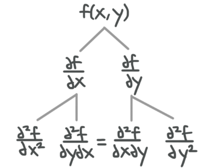
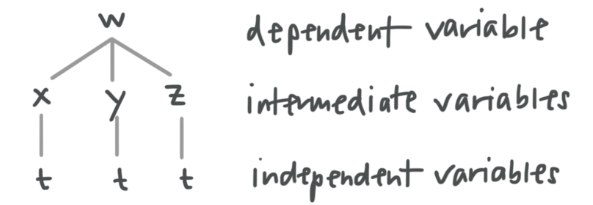
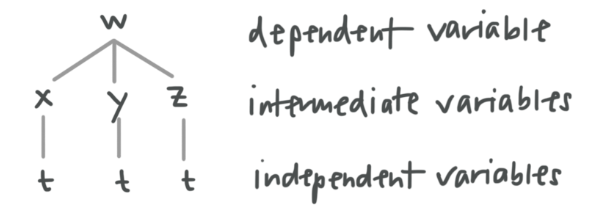

Calculus III, Pt. 1
Partial Derivatives - 3D Coordinate Systems
Given two points $A$ and $B$ in 3D space, $A(x_1, y_1, z_1)$ and $B(x_2, y_2, z_2)$, we calculate the distance between them using:
$D = \sqrt{ (x_2 - x_1)^2 + (y_2 - y_1)^2 + (z_2 - z_1)^2 }$
It doesn't matter which point is $A$ and which is $B$.
Center, Radius, and Equation of the Sphere
We can calculate the equation of a sphere using:
$(x-h)^2 + (y-k)^2 + (z-l)^2 = r^2$
where $(h, k, l)$ is the center of the sphere and $r$ is the radius. To calculate the radius, we can use the distance formula:
$D = \sqrt{ (x_2 - x_1)^2 + (y_2 - y_1)^2 + (z_2 - z_1)^2 }$
where $D$ is the length of the radius, $(x_1, y_1, z_1)$ is one point on the surface of the sphere, and $(x_2, y_2, z_2)$ is the center of the sphere.
Example:
Find the center and radius of the following sphere:
$x^2 + 2x + y^2 - 2y + z^2 - 6z = 14$
To change the equation into the standard form of the equation of a sphere, we'll need to complete the square with respect to each variable. This requires us to use the coefficient on the first degree term, which for $x$ is $2x$, for $y$ is $-2y$, and for $z$ is $-6z$. Completing the square tells us that we'll divide each coefficient by $2$, then take the result and square it.
With respect to $x$: $\frac{2}{2} = 1, 1^2 = 1$
With respect to $y$: $\frac{-2}{2} = -1, (-1)^2 = 1$
With respect to $z$: $\frac{-6}{2} = -3, (-3)^2 = 9$
Adding each of these values to our equation, and then subtracting them out again, we get:
$(x^2 + 2x + 1) - 1 + (y^2 - 2y + 1) + (z^2 - 6z + 9) = 25$
$(x+1)^2 + (y-1)^2 + (z - 3)^2 = 25$
With our equation in standard form, we can pull out the center point. The center is $(-1, 1, 3)$. To find the radius, we take the square root of the right-hand side, $\sqrt{25} = 5$.
Partial Derivatives - Lines and Planes
Vector, Parametric, and Symmetric Equations of a Line
Vector, parametric, and symmetric equations are different types of equations that can be used to represent the same line.
The vector equation of a line is given by $r = r_0 + tv$, where $r_0$ is a point on the line and $v$ is a parallel vector.
The parametric equations of a line are given by $x=a$, $y=b$, $z=c$, where $a$, $b$, and $c$ are the coefficients from the vector equation $r = a \mathbf{i} + b \mathbf{j} + c \mathbf{k}$.
The symmetric equations of a line are given by:
$\frac{x-a_1}{v_1} = \frac{y-a_2}{v_2} = \frac{z-a_3}{v_3}$
where $(a_1, a_2, a_3)$ are the coordinates from a point on the line and $v_1, v_2, v_3$ are the coordinates from a parallel vector.
Example:
Find the vector, parametric, and symmetric equations of the line that passes through the point $a(2, -1, 3)$ and is parallel to $2 \mathbf{i} - \mathbf{j} + 4 \mathbf{k} = 1$.
We can say that the given point $a(2, -1, 3)$ can also be represented by $2 \mathbf{i} - \mathbf{j} + 3 \mathbf{k}$. Additionally, we know that $2 \mathbf{i} - \mathbf{j} + 4 \mathbf{k} = 1$ can be represented by $\langle 2, -1, 4 \rangle$ or $2 \mathbf{i} - \mathbf{j} + 4 \mathbf{k}$.
To find the vector equation of the line, we'll use $r = r_0 + tv$, where $r_0$ is the point on the line $w \mathbf{i} - \mathbf{j} + 3 \mathbf{k}$ and $v$ is the parallel vector $2 \mathbf{i} - \mathbf{j} + 4 \mathbf{k}$.
$r = (2 \mathbf{i} + \mathbf{j} + 3 \mathbf{k}) + t(2 \mathbf{i} - \mathbf{j} + 4 \mathbf{k})$
$r = 2 \mathbf{i} - \mathbf{j} + 3 \mathbf{k} + 2 \mathbf{i}t - \mathbf{j}t + 4 \mathbf{k}t$
$r = (2 \mathbf{i} + 2 \mathbf{i}t) + (-j - \mathbf{j}t) + 3 \mathbf{k} + 4 \mathbf{k}t$
$r = (2 + 2t) \mathbf{i} + (-1 -t) \mathbf{j} + (3 + 4t) \mathbf{k}$
With the vector equation in hand, it is easy to find the parametric equations of the line:
$x = 2 + 2t$
$y = -1 - t$
$z = 3 + 4t$
To find the symmetric equations, we'll plug the given coordinate point in for $a_1$, $a_2$, and $a_3$, plus the coordinates from the perpendicular vector in for $v_1$, $v_2$, and $v_3$.
$\frac{x-2}{2} = \frac{y - (-1)}{-1} = \frac{z-3}{4}$
$\frac{x-2}{2} = -y-1 = \frac{z-3}{4}$
Parallel, Intersecting, Skew, and Perpendicular Lines
Given two lines,
| $L_1:$ | $L_2:$ |
|---|---|
| $x_1 = a_1 + b_1t$ | $x_2 = a_2 + b_2s$ |
| $y_1 = c_1 + d_1t$ | $y_2 = c_2 + d_2s$ |
| $z_1 = e_1 + f_1t$ | $z_2 = e_2 + f_2s$ |
The lines are parallel if:
$\frac{b_1}{b_2} = \frac{d_1}{d_2} = \frac{f_1}{f_2}$
They are intersecting if the lines are not parallel (or you can solve them as a system of simultaneous equations), and perpendicular if the lines are intersecting and their dot product is $0$. They are 'skew' if not parallel and not intersecting.
Example:
Say whether the following lines are parallel, intersecting, perpendicular, or skew:
| $L_1:$ | $L_2:$ |
|---|---|
| $x_1 = 1 + 5t$ | $x_2 = 2 + 3s$ |
| $y_1 = -3 + 2t$ | $y_2 = 3 + 4s$ |
| $z_1 = 1 + t$ | $z_2 = 3 - 2s$ |
$\frac{5}{3} \neq \frac{2}{4} \neq \frac{1}{-2}$, so they are not parallel.
We'll test to see whether or not they are intersecting. We'll set the equations for $x$, $y$, and $z$ from each line equal to each other, and if we can find a solution set for parameter values $s$ and $t$ which satisfies all three equations, we have proven that the lines are intersecting.
Setting $x_1 = x_2$ ([1]):
$1 + 5t = 2 + 3s$
$5t = 1 + 3s$
$t = \frac{1}{5} + \frac{3}{5}s$
Setting $y_1 = y_2$ ([2]):
$-3 + 2t = 3 + 4s$
Plugging [1] into [2] gives ([3]):
$-3 + 2 \left( \frac{1}{5} + \frac{3}{5}s \right) = 3 + 4s$
$-3 + \frac{2}{5} + \frac{6}{5}s = 3 + 4s$
$6 + \frac{2}{5} = 4s - \frac{6}{5}s$
$\frac{-28}{5} = \frac{14}{5}s$
$s = \frac{-28}{14} = -2$
Plugging [3] into [1] gives ([4]):
$t = \frac{1}{5} + \frac{3}{5}(-2)$
$t = \frac{1}{5} - \frac{6}{5}$
$t = -1$
Plugging [3] and [4] into [5] gives:
$1 + t = 3 - 2s$
$1 + (-1) = 3 - 2(-2)$
$0 = 7$
Since $0 \neq 7$, the lines are not intersecting. Because $L_1$ and $L_2$ are not parallel and not intersecting, by definition they must be skew. Had they been intersecting, we also would have checked for perpendicularity by seeing if the dot product is $0$.
Equation of a Plane
The equation of a plane is given by the formula:
$a(x - x_1) + b(y - y_1) + c(z - z_1) = 0$
where $\langle a, b, c \rangle$ are the direction numbers from the normal vector to the plane.
Given three points in the plane $P(P_1, P_2, P_3)$, $Q(Q_1, Q_2, Q_3)$ and $R(R_1, R_2, R_3)$, we can find the equation of the plane by:
1. Using the points to generate two vectors
$\overrightarrow{PQ} = \langle (Q_1 - P_1), (Q_2 - P_2), (Q_3 - P_3) \rangle$
$\overrightarrow{PR} = \langle (R_1 - P_1), (R_2 - P_2), (R_3 - P_3) \rangle$
2. Taking the cross-product of $\overrightarrow{PQ}$ and $\overrightarrow{PR}$ to get the normal vector to the plane
$ \overrightarrow{PQ} \times \overrightarrow{PR} = \begin{vmatrix} \mathbf{i} & \mathbf{j} & \mathbf{k} \\ PQ_1 & PQ_2 & PQ_3 \\ PR_1 & PR_2 & PR_3 \\ \end{vmatrix} $
$ \overrightarrow{PQ} \times \overrightarrow{PR} = \mathbf{i} \begin{vmatrix} PQ_2 & PQ_3 \\ PR_2 & PR_3 \\ \end{vmatrix} - \mathbf{j} \begin{vmatrix} PQ_1 & PQ_3 \\ PR_1 & PR_3 \\ \end{vmatrix} + \mathbf{k} \begin{vmatrix} PQ_1 & PQ_2 \\ PR_1 & PR_2 \\ \end{vmatrix} $
$\overrightarrow{PQ} \times \overrightarrow{PR} = i(PQ_2 PR_3 - PQ_3 PR_2) + j(PQ_1 PR_3 - PQ_3 PR_1) + k(PQ_1 PR_2 - PQ_2 PR_1)$
and then plugging the given points and the normal vector into the formula for the equation of the plane.
Example:
Find the equation of the plane that passes through the following points:
$P(1, 0, 2)$
$Q(2, -1, 3)$
$R(1, -1, 2)$
$\overrightarrow{PQ} = \langle (2-1), (-1 - 0), (3-2) \rangle$
$\overrightarrow{PQ} = \langle 1, -1, 1 \rangle$
$\overrightarrow{PR} = \langle (1-1), (-1 - 0), (2-2) \rangle$
$\overrightarrow{PR} = \langle 0, -1, 0 \rangle$
Taking the cross product,
$ \overrightarrow{PQ} \times \overrightarrow{PR} = \begin{vmatrix} \mathbf{i} & \mathbf{j} & \mathbf{k} \\ 1 & -1 & 1 \\ 0 & -1 & 0 \\ \end{vmatrix} $
$ \overrightarrow{PQ} \times \overrightarrow{PR} = \mathbf{i} \begin{vmatrix} -1 & 1 \\ 1 & 0 \\ \end{vmatrix} - \mathbf{j} \begin{vmatrix} 1 & 1 \\ 0 & 0 \\ \end{vmatrix} + \mathbf{k} \begin{vmatrix} 1 & -1 \\ 0 & -1 \\ \end{vmatrix} $
$\overrightarrow{PQ} \times \overrightarrow{PR} = [(-1)(0) - (1)(-1)] \mathbf{i} = [(1)(0) - (1)(0)] \mathbf{j} + [(1)(-1) - (-1)(0)] \mathbf{k}$
$\overrightarrow{PQ} \times \overrightarrow{PR} = (0+1)i - (0-0)j + (-1-0)k$
$\overrightarrow{PQ} \times \overrightarrow{PR} = 1i - 0j - 1k$
$\overrightarrow{PQ} \times \overrightarrow{PR} = \langle 1, 0, -1 \rangle$
Now we'll plug in any of the given points, we'll use $P$, and the direction numbers from the cross product into the formula for the equation of the plane.
$(1)(x-1) + (0)(y-0) + (-1)(z-2) = 0$
$x - 1 - 2 + 2 = 0$
$x - z = 1$
Parallel, Perpendicular, and Angle Between Planes
Example:
Say whether the planes are parallel, perendicular, or neither; and if neither parallel nor perpendicular, find the angle between the planes.
$3x - y + 2z = 5$
$x + 4y + 3z = 1$
We'll find the normal values of the given planes:
| Plane | Normal Vector to the Plane |
|---|---|
| $3x - y + 2z = 5$ | $a \langle 3, -1, 2 \rangle$ |
| $x + 4y + 3z = 1$ | $b \langle 1, 4, 3 \rangle$ |
To say whether the planes are parallel, we'll set up our ratio inequality using the direction numbers from their normal vectors.
$\frac{3}{1} = \frac{-1}{4} = \frac{2}{3}$
To say whether the planes are perpendicular, we'll take the dot product of their normal vectors.
$a \cdot b = (3)(1) + (-1)(4) + (2)(3)$
$a \cdot b = 3 - 4 + 6$
$a \cdot b = 5$
Since the dot product is not $0$, the planes are not perpendicular. Since neither parallel nor perpendicular, we know that they are set at a non-$90^{\circ}$ angle from one another, which is given by the formula:
$cos \theta = \frac{a \cdot b}{|a| |b|}$
The magnitude of $a \langle 3, -1, 2 \rangle$ is:
$|a| = \sqrt{ (3-0)^2 + (-1-0)^2 + (2-0)^2 }$
$|a| = \sqrt{9 + 1 + 4}$
$|a| = \sqrt{14}$
The magnitude of $b \langle 1,4,3 \rangle$ is:
$|b| = \sqrt{ (1-0)^2 + (4-0)^2 + (3-0)^2 }$
$|b| = \sqrt{1 + 16 + 9}$
$|b| = \sqrt{26}$
Plugging $a \cdot b = 5$, $|a| = \sqrt{14}$ and $|b| = \sqrt{26}$ into our cosine formula gives:
$cos ~\theta = \frac{5}{ \sqrt{14} \sqrt{26} }$
$cos ~\theta = \frac{5}{\sqrt{364}}$
$\theta = arccos \frac{5}{\sqrt{364}}$
$\theta = 74.8^{\circ}$
The angle between the planes is $74.8^{\circ}$.
Parametric Equations for the Line of Intersection of Two Planes
If two planes intersect each other, the intersection will be a line. The vector equation for the line of intersection is $r = r_0 + tv$.
- $r_0$ is a point on the line
- $v$ is the vector result of the cross product of the normal vectors of the two planes
The parametric equations for the line of intersection are given by:
$x=a, y=b, z=c$
where $a$, $b$, and $c$ are the coefficients from the vector equation $r = a \mathbf{i} + b \mathbf{j} + c \mathbf{k}$.
Example:
Find the parametric equations for the line of intersection of the following planes.
$2x + y - z = 3$
$x - y + z = 3$
We'll need to find the vector equation of the line of intersection. In order to get it, we'll need $v$, the cross product of the normal vectors of the given planes.
| Plane | Normal Vector to the Plane |
|---|---|
| $2x + y = 3$ | $a \langle 2,1,-1 \rangle$ |
| $x - y + z = 3$ | $b \langle 1,-1,1 \rangle$ |
The cross product of the normal vectors is:
$ v = |a \times b| = \begin{vmatrix} \mathbf{i} & \mathbf{j} & \mathbf{k} \\ 2 & 1 & -1 \\ 1 & -1 & 1 \\ \end{vmatrix} $
$ v = |a \times b| = \mathbf{i} \begin{vmatrix} 1 & -1 \\ -1 & 1 \\ \end{vmatrix} - \mathbf{j} \begin{vmatrix} 2 & -1 \\ 1 & 1 \\ \end{vmatrix} + \mathbf{k} \begin{vmatrix} 2 & 1 \\ 1 & -1 \\ \end{vmatrix} $
$v = [(1)(1) - (-1)(-1)] \mathbf{i} - [(2)(1) - (-1)(1)] \mathbf{j} + [(2)(-1) - (1)(1)] \mathbf{k}$
$v = (1-1) \mathbf{i} - (2+1) \mathbf{j} + (-2-1) \mathbf{k}$
$v = 0i - 3j - 3k$
$v = \langle 0, -3, -3 \rangle$
We also need a point on the line of intersection. To get it, we'll use the equations of the given planes as a system of linear equations. If we set $z=0$ in both equations, we get:
$2x + y - z = 3$
$2x + y - 0 = 3$
$2x + y = 3$
and
$x - y + z = 3$
$x - y + 0 = 3$
$x - y = 3$
Now we'll add the two equations together.
$(2x + x) + (y-y) = 3 + 3$
$3x + 0 = 6$
$x = 2$
Plugging $x=2$ back into $x-y=3$, we get:
$2 - y = 3$
$-y = 1$
$y = -1$
Putting these values together, the point on the line of intersection is $(2, -1, 0)$.
$r_0 = 2 \mathbf{i} + \mathbf{j} + 0 \mathbf{k}$
$r_0 = (2, -1, 0)$
Now we'll plug $v$ and $r_0$ into the vector equation.
$r = r_0 + tv$
$r = (2 \mathbf{i} - \mathbf{j} + 0 \mathbf{k}) + t(0 \mathbf{i} - 3 \mathbf{j} - 3 \mathbf{k})$
With the vector equation for the line of intersection in hand, we can find the parametric equations for the same line. Matching up $r = a \mathbf{i} + b \mathbf{j} + c \mathbf{k}$ with our vector equation,
$r = (2) \mathbf{i} + (-1 -3t) \mathbf{j} + (-3t) \mathbf{k},$
we can say that:
$a = 2$
$b = -1 -3t$
$c = -3t$
Therefore, the parametric equations for the line of intersection are:
$x = 2$
$y = -1 -3t$
$z = -3t$
Symmetric Equations for the Line of Intersection of Two Planes
The vector equation for the line of intersection of the planes is given by $r = r_0 + tv$, where $r_0$ is a point on the line and $v$ is the cross-product of the normal vectors of the two planes. If we break this vector equation into parametric equations for the plane, we get:
$x = x_0 + at$
$y = y_0 + bt$
$z = z_0 + ct$
Solving each of the parametric equations for $t$ gives:
$t = \frac{x - x_0}{a}$
$t = \frac{y - y_0}{b}$
$t = \frac{z - z_0}{c}$
Because we have all values equal to $t$, we know those values must be equal to each other, and we find:
$\frac{x - x_0}{a} = \frac{y - y_0}{b} = \frac{z - z_0}{c}$
where $(x_0, y_0, z_0)$ is a point on the line, and $c$ comes from the cross product $v = \langle a,b,c \rangle$. These are symmetric equations for the line of intersection of the two planes.
Example:
Find the symmetric equations for the line of intersection of the planes:
$2x + y - z = 3$
$x - y + z = 3$
The normal vectors for the planes are $a(2, 1, -1)$ and $b \langle 1,-1,1 \rangle$. So the cross product of the normal vectors is:
$ v = \begin{vmatrix} \mathbf{i} & \mathbf{j} & \mathbf{k} \\ 2 & 1 & -1 \\ 1 & -1 & 1 \\ \end{vmatrix} $
$ v = \mathbf{i} \begin{vmatrix} 1 & -1 \\ -1 & 1 \\ \end{vmatrix} - \mathbf{j} \begin{vmatrix} 2 & -1 \\ 1 & 1 \\ \end{vmatrix} + \mathbf{k} \begin{vmatrix} 2 & 1 \\ 1 & -1 \\ \end{vmatrix} $
$v = [(1)(1) - (-1)(-1)] \mathbf{i} - [(2)(1) - (-1)(1)] \mathbf{j} + [(2)(-1) - (1)(1)] \mathbf{k}$
$v = (1-1) \mathbf{i} - (2+1) \mathbf{j} + (-2-1) \mathbf{k}$
$v = 0 \mathbf{i} - 3 \mathbf{j} - 3 \mathbf{k}$
$v = \langle 0,-3,-3 \rangle$
To find a point on the line of intersection, we'll set $z=0$ in both equations.
$2x + y - z = 3$
$2x + y - 0 = 3$
$2x + y = 3$
and
$x - y + z = 3$
$x - y + 0 = 3$
$x - y = 3$
We'll add the equations to find $x$.
$(2x + x) + (y - y) = 3 + 3$
$3x + 0 = 6$
$x = 2$
Plugging $x=2$ back into $x - y = 3$, we get:
$2 - y = 3$
$-y = 1$
$y = -1$
Putting these two values together, the point on the line of intersection is $(2, -1, 0)$. Then with the cross product $v = \langle 0,-3,-3 \rangle$ and $(2, -1, 0)$, we'll build the parametric equations.
$x = 2 + 0t$
$x = 2$
$y = -1 -3t$
$z = 0-3t$
$z = -3t$
Solve these equations for the parameter $t$.
$x = 2$
$t = \frac{y+1}{3}$
$t = \frac{-z}{3}$
The equation $x=2$ cannot be solved for $t$, so we'll separate it from the other two equations for $t$, listing the symmetric equations for the line of intersection of the planes as:
$x=2, - \frac{y+1}{3}, - \frac{z}{3}$
Distance Between a Point and a Line
Example:
Find the distance between point $(4,1,-2)$ and the line $x=1+t$, $y=3-2t$, $z=4-3t$.
First, we take the line equation in parametric form and define it in terms of vectors, by treating each of the parametric equations as the coefficients on a vector that includes $i$, $j$, and $k$.
$(1+t) \mathbf{i} + (3-2) \mathbf{j} + (4-3t) \mathbf{k}$
$= 1 \mathbf{i} + t \mathbf{i} + 3 \mathbf{j} - 2t \mathbf{j} + 4k - 3t \mathbf{k}$
$= (1 \mathbf{i} + 3 \mathbf{j} + 4 \mathbf{k}) + (t \mathbf{i} - 2t \mathbf{j} - 3t \mathbf{k})$
$= ( \mathbf{i} + 3 \mathbf{j} + 4 \mathbf{k}) + t( \mathbf{i} - 2 \mathbf{j} - 3 \mathbf{k})$
The coefficients in the second group give us our direction numbers, and the coefficients in the first group give us a point through which the line passes.
Direction numbers: $\langle 1,-2,-3 \rangle$
Point through which line passes: $(1,3,4)$
All we need now is a vector that represents the distance between this coordinate point $(4,1,2)$, and the point which lies on the line (a).
$a = \langle 1,-2,-3 \rangle$
$b = \langle 4-1, 1-3, -2-4 \rangle$
$b = \langle 3, -2, -6 \rangle$
Distance will be equal to the magnitude of the cross product of $a$ and $b$, divided by the magnitude of $a$.
$d = \frac{|a \times b|}{|a|}$
$ a \times b = \begin{vmatrix} \mathbf{i} & \mathbf{j} & \mathbf{k} \\ 1 & -2 & -3 \\ 3 & -2 & -6 \\ \end{vmatrix} $
$ a \times b = \begin{vmatrix} -2 & -3 \\ -2 & -6 \\ \end{vmatrix} \mathbf{i} - \begin{vmatrix} 1 & -3 \\ 3 & -6 \\ \end{vmatrix} \mathbf{j} + \begin{vmatrix} 1 & -2 \\ 3 & -2 \\ \end{vmatrix} \mathbf{k} $
$a \times b = (12 - 6) \mathbf{i} - (-6 - (-9)) \mathbf{j} + (-2 - (-6)) \mathbf{k}$
$a \times b = 6 \mathbf{i} - 3 \mathbf{j} + 4 \mathbf{k}$
The cross product is $\langle 6,-3,4 \rangle$. We must take its magnitude.
$|a \times b| = \sqrt{36+9+16} = \sqrt{61}$
$|a| = \sqrt{1+4+9} = \sqrt{14}$
The distance between the point and the line is $\frac{\sqrt{61}}{\sqrt{14}}$, i.e., $\sqrt{\frac{61}{14}}$.
Partial Derivatives - Partial Derivatives
Finding derivatives of a multivariable function, we take the derivative with respect to one variable at a time. For example, we take the derivative of $x$ holding $y$ as a constant, then with respect to $y$ holding $x$ as constant. We call these partial derivatives.
We know that, if $z$ is a function defined in terms of $x$ and $y, z = f(x,y)$, then:
- The partial derivative of $z$ with respect to $x$ is:
- The partial derivative of $z$ with respect to $y$ is:
$z_x = f_x(x,y) = \lim \limits_{h \to 0} \frac{ f(x+h,y) - f(x,y) }{h}$
$z_y = f_y(x,y) = \lim \limits_{h \to 0} \frac{ f(x,y+h) - f(x,y) }{h}$
The partial derivatives of a function defined in terms of $x$ and $y$ could be written in all of these ways:
$f_x(x,y) = \frac{\partial z}{\partial x} = \frac{\partial f}{\partial x} = \frac{\partial}{\partial x}f(x,y) = f_y = z_y$
Example:
Find the partial derivatives of $f(x,y) = 2x^2y$.
For the partial derivative of $z$ with respect to $x$, substitute $x+h$ into the original function for $x$.
$f(x+h,y) = z(x+h)^2y$
$f(x+h,y) = 2(x^2 + 2xh + h^2)y$
$f(x+h,y) = 2x^2y + 4xhy + 2h^2y$
Plugging values for $f(x,y)$ and $f(x+h,y)$ into the definition, we get:
$f(x,y) = \lim \limits_{h \to 0} \frac{ 2x^2y + 4xhy + 2h^2y - 2x^2y }{h}$
$f_x(x,y) = \lim \limits_{h \to 0} \frac{ 4xhy + 2h^2y }{h}$
$f(x,y) = \lim \limits_{h \to 0} 4xy + 2(0)y$
$f_x(x,y) = 4xy$
For the partial derivative of $z$ with respect to $y$, substitute $y+h$ into the original function for $y$.
$f(x,y+h) = 2x^2(y+h)$
$f(x,y+h) = 2x^2y + 2x^2h$
Plugging our values of $f(x,y)$ and $f(x,y+h)$ into the definition, we get:
$f_y(x,y) = \lim \limits_{h \to 0} \frac{ 2x^2y + 2x^2h - 2x^2y }{h}$
$f_y(x,y) = \lim \limits_{h \to 0} \frac{2x^2h}{h}$
$f_y(x,y) = \lim \limits_{h \to 0)} 2x^2$
$f_y(x,y) = 2x^2$
We can apply the usual derivative rules to multivariable functions to avoid using the difference quotient.
Example:
Using the power rule, find the partial derivatives of $f(x,y) = 2x^2y$.
$f_x(x,y) = 2 \left( \frac{d}{dx} x^2 \right) y$
$f_x(x,y) = 2(2x)y$
$f_x(x,y) = 4xy$
$f_y(x,y) = 2x^2 \left( \frac{d}{dy} y \right)$
$f_y(x,y) = 2x^2(1)$
$f_y(x,y) = 2x^2$
Partial Derivatives in Three or More Variables
Derivatives of functions with three or more variables are found in the same way as for functions with two variables.
Example:
Find the partial derivatives of the function $f(x,y,z) = 3x^5 y^2 z^3$.
$\frac{\partial f}{\partial x} = 3(5x^4) y^2 z^3$
$\frac{\partial f}{\partial x} = 15x^4 y^2 z^3$
and
$\frac{\partial f}{\partial y} = 3x^5 (2y) z^3$
$\frac{\partial f}{\partial y} = 6x^5 y z^3$
and
$\frac{\partial f}{\partial z} = 9x^5 y^2 z^2$
Example:
Find the partial derivatives of the following function.
$f(w,x,y,z) = 2wx^4 - \frac{3y^3}{72^2} + sin ~2x$
$\frac{\partial f}{\partial w} = 2x^4$
and
$\frac{\partial f}{\partial x} = 2w(4x^3 + (2) ~cos ~2x)$
$\frac{\partial f}{\partial x} = 8wx^3 + 2 ~cos ~2x$
and
$\frac{\partial f}{\partial y} = - \frac{3(3y^2)}{7z^2}$
$\frac{\partial f}{\partial y} = - \frac{9y^2}{7z^2}$
and
$\frac{\partial f}{\partial z} = - \frac{3y^3}{7}(-2) z^{-3}$
$\frac{\partial f}{\partial z} = \frac{6y^3}{7z^3}$
Higher Order Partial Derivatives
The second derivative of a multivariable function can be found in the same way. But instead of just one function that defines the second derivative, we'll need four functions that define it:
The derivative with respect to $x$, of the first-order partial derivative with respect to $x$:
$f_{xx} = \frac{\partial}{\partial x} \left( \frac{\partial f}{\partial x} \right) = \frac{\partial^2 f}{\partial x^2}$
The derivative with respect to $y$, of the first-order partial derivative with respect to $y$:
$f_{yy} = \frac{\partial}{\partial y} \left( \frac{\partial f}{\partial y} \right) = \frac{\partial^2 f}{\partial y^2}$
The derivative with respect to $y$, of the first-order partial derivative with respect to $x$:
$f_{xy} = \frac{\partial}{\partial y} \left( \frac{\partial f}{\partial x} \right) = \frac{\partial^2 f}{\partial y \partial x}$
The derivative with respect to $x$, of the first-order partial derivative with respect to $y$:
$f_{yx} = \frac{\partial}{\partial x} \left( \frac{\partial f}{\partial y} \right) = \frac{\partial^2 f}{\partial x \partial y}$

Note that even though it looks like four second-order partial derivatives, the two second-order partial derivatives in the middle of the third row will be equal
Example:
Find the second-order partial derivatives of the multivariable function $f(x,y) = 2x^2y$.
The first order partial derivatives are:
$f_x(x,y) = 4xy$
$f_y(x,y) = 2x^2$
The four second order partial derivatives are:
$f_{xx} = \frac{\partial}{\partial x} (4xy) = 4y$
$f_{xy} = \frac{\partial}{\partial x} (2x^2) = 4x$
$f_{yx} = \frac{\partial}{\partial y} (4xy) = 4x$
$f_{yy} = \frac{\partial}{\partial y} (2x^2) = 0$
Notice that the mixed second-order partial derivative is the same, regardless of whether you take the partial derivative first with respect to $x$, or first with respect to $y$.
Partial Derivatives - Differentials
Differential of a Multivariable Function
The differential of a multivariable function is given by:
$dz = \frac{dz}{dx} ~dx + \frac{dz}{dy} ~dy$
$dz/dx$ is the partial derivative of $f$ with respect to $x$, and $dz/dy$ is the partial derivative of $f$ with respect to $y$.
Example:
Find the differential of the following multivariable function.
$z = 6x^2y - 4 ~ln ~y$
We need to find the partial derivatives of the function with respect to each variable.
$\frac{\partial z}{\partial x} = 6(2x)y$
$\frac{\partial z}{\partial x} = 12xy$
and
$\frac{\partial z}{\partial y} = 6x^2 - 4 \left( \frac{1}{y} \right)$
$\frac{\partial z}{\partial y} = 6x^2 - \frac{4}{y}$
We then plug the partial derivatives into the formula for the differential.
$dz = (12xy) ~dx + \left( 6x^2 - \frac{4}{y} \right) ~dy$
$dz = 12xy ~dx + 6x^2 ~dy - \frac{4}{y} ~dy$
This is the differential of the function.
Chain Rule
Chain Rule for Multivariable Functions
When we take partial derivatives of a function like $f(x,y,z) = xyz$, we need one partial derivative with respect to each of the independent variables.
$\frac{\partial f}{\partial x} = yz$
$\frac{\partial f}{\partial y} = xz$
$\frac{\partial f}{\partial z} = xy$
Now we introduce a new type of multivariable function, in which we must insert intermediate variables in between the dependent and independent variables. For example, $f(x,y,z) = xyz$, where $x=t$, $y=t^2$, $z=t^3$.
When there is only one independent variable, we'll call it a case 1 scenario; and case 2 when there are multiple independent variables.
Example (Case 1):
Use the chain rule to find the partial derivatives of the following multivariable function.
$w = x^2y - 6y^3 \sqrt{z}, \text{where}$
$x = 5t^2$
$y = 4t + 1$
$z = t^3 - 5t$
Since $w$ is defined in terms of $x$, $y$, and $z$, and $x$, $y$, and $z$ are all defined in terms of $t$, we have the following tree diagram.

With only one independent variable, we will only have one derivative, the derivative of $w$ with respect to the independent variable $t$. We need to find each component of the formula for $dw/dt$, and we'll start with the partial derivatives of w with respect to the intermediate variables $x$, $y$, and $z$.
$\frac{\partial w}{\partial x} = (2x)y$
$\frac{\partial w}{\partial x} = 2xy$
and
$\frac{\partial w}{\partial y} = x^2(1) - 6(3y^2) \sqrt{z}$
$\frac{\partial w}{\partial y} = x^2 - 18y^2 \sqrt{z}$
Now we just need to find the derivatives of the intermediate variables $x$, $y$, and $z$ with respect to the independent variable $t$.
$\frac{dx}{dt} = 10t$
$\frac{dy}{dt} = 4$
$\frac{dz}{dt} = 3t^2 - 5$
Plug everything we found into the equation for $dw/dt$.
$\frac{dw}{dt} = \frac{dw}{dx} \frac{dx}{dt} + \frac{dw}{dy} \frac{dy}{dt} + \frac{dw}{dz} \frac{dz}{dt}$
$\frac{dw}{dt} = (2xy)(10t) + (x^2 - 18y^2 \sqrt{z})(4) + )-3y^3 z^{-\frac{1}{2}}(3t^2 - 5)$
$\frac{dw}{dt} = 20xyt + 4x^2 - 72y^2 \sqrt{z} - 9y^3 z^{-\frac{1}{2}} t^2 + 15y^3 z^{-\frac{1}{2}}$
$\frac{dw}{dt} = 20xyt + 4x^2 - 72y^2 \sqrt{z} - \frac{9y^3 t^2}{\sqrt{z}} + \frac{15y^3}{\sqrt{z}}$
$\frac{dw}{dt} = 20xyt + 4x^2 - 72y^2 \sqrt{z} + \frac{ 15y^3 - 9y^3 t^2 }{\sqrt{z}}$
$\frac{dw}{dt} = 20xyt + 4x^2 - 72y^2 \sqrt{z} + \frac{ 3y^3(5-3t^2) }{\sqrt{z}}$
This is the derivative of $w$ with respect to $t$.
Example (Case 2):
Use the chain rule to find the partial derivatives of the following multivariable function.
$z = ln ~r + r^2 ~sin ~\theta$, where:
$r = 3s^2 - t$
$\theta = 2t^2 - \frac{4}{s^2}$
We have the following tree diagram:

The number of independent variables dictates the number of partial derivatives we need to find. We have two independent variables, so we'll have two partial derivatives, which will be the partial derivatives of the dependent variable $z$ with respect to the independent variables $s$ and $t$.
$\frac{\partial z}{\partial s} = \frac{\partial z}{\partial r} \frac{\partial r}{\partial s} + \frac{\partial z}{\partial \theta} \frac{\partial \theta}{\partial s}$
$\frac{\partial z}{\partial t} = \frac{\partial z}{\partial r} \frac{\partial r}{\partial t} + \frac{\partial z}{\partial \theta} \frac{\partial \theta}{\partial t}$
$\frac{\partial z}{\partial r} = \frac{1}{r} + 2r ~sin ~\theta$
$\frac{\partial z}{\partial \theta} = r^2 ~cos ~\theta$
Now we need to find the partial derivatives of the intermediate variables $r$ and $\theta$ with respect to the independent variables $s$ and $t$.
With respect to $s$,
$\frac{\partial r}{\partial s} = 6s$
$\frac{\partial \theta}{ds} = \frac{8}{s^3}$
With respect to $t$,
$\frac{\partial r}{\partial t} = -1$
$\frac{\partial \theta}{\partial t} = 4t$
Plug everything we found into the equations for $\frac{\partial z}{\partial s} and \frac{\partial z}{\partial t}$.
$\frac{\partial z}{\partial s} = \frac{\partial z}{\partial r} \frac{\partial r}{\partial s} + \frac{\partial z}{\partial \theta} \frac{\partial \theta}{\partial s}$
$\frac{\partial z}{\partial s} = \left( \frac{1}{r} + 2r ~sin ~\theta \right) (6s) + (r^2 ~cos ~\theta) \left( \frac{8}{s^3} \right)$
$\frac{\partial z}{\partial s} = \frac{6s}{r} + 12rs ~ sin ~\theta + \frac{ 8r^2 ~cos ~\theta }{s^3}$
and
$\frac{\partial z}{\partial t} = \frac{\partial z}{\partial r} \frac{\partial r}{\partial t} + \frac{\partial z}{\partial \theta} \frac{\partial \theta}{\partial t}$
$\frac{\partial z}{\partial t} = \left( \frac{1}{r} + 2r ~sin ~\theta \right) (-1) + (r^2 ~cos ~\theta) (4t)$
$\frac{\partial z}{\partial t} = - \frac{1}{r} - 2r ~sin ~\theta + 4r^2t ~cos ~\theta$
These are the partial derivatives of $z$ with respect to $s$ and $t$.
Partial Derivatives - Implicit Differentiation
Implicit Differentiation for Multivariable Functions
When we want to use implicit differentiation to find partial derivatives of multivariable functions, we'll use the following formulas:
For multivariable functions in two variables:
$\frac{dy}{dx} = - \frac{\partial f / \partial x}{\partial F / \partial y}$
For multivariable functions in three variables:
$\frac{\partial z}{\partial x} = - \frac{\partial F / \partial x}{\partial F / \partial z}$
and
$\frac{\partial z}{\partial y} = - \frac{\partial F / \partial y}{\partial F / \partial z}$
Before we can use these formulas to find derivatives or partial derivatives of the original function, we'll need to rearrange it so that it is equal to $0$, and then rename it $F(x,y)$ for two-variable functions of $F(x,y,z)$ for three-variable functions.
Example (Two Variables):
Use implicit differentiation to find the partial derivative of the following multivariable function.
$xe^{2y} = x^2 - y^3$
We'll start by rearranging the function so that it is equal to $0$, and cal it $F(x,y)$.
$0 = x^2 - y^3 - xe^{2y}$
$F(x,y) = x^2 - y^3 - xe^{2y}$
Now, take partial derivatives of F with respect to $x$ and $y$.
$\frac{\partial F}{\partial x} = 2x - e^{2y}$
and
$\frac{\partial F}{\partial y} = -3y^2 - xe^{2y}(2)$
$\frac{\partial F}{\partial y} = -3y^2 - 2xe^{2y}$
We'll plug the partial derivatives into the formula of a multivariable function with two variables.
$\frac{dy}{dx} = - \frac{\partial F / \partial x}{\partial F / \partial y}$
$\frac{dy}{dx} = - \frac{2x - e^{2y}}{-3y^2 - 2xe^{2y}}$
$\frac{dy}{dx} = \frac{2x - e^{2y}}{3y^2 + 2xe^{2y}}$
This is the partial derivative of $xe^{2y} = x^2 - y^3$.
Example (Three Variables):
Use implicit differentiation to find the partial derivatives of the following multivariable function.
$x^2 ~sin ~z = 3yz + 2x^3$
We'll start by rearranging the function so that it is equal to $0$, and call it $F(x,y,z)$.
$0 = 3yz + 2x^3 - x^2 ~sin ~z$
$F(x,y,z) = 3yz + 2x^3 - x^2 ~sin ~z$
Now we'll take partial derivatives of $F$ with respect to $x$, $y$, and $z$.
$\frac{\partial F}{\partial x} = 6x^2 - 2x ~sin ~z$
$\frac{\partial F}{\partial y} = 3z$
$\frac{\partial F}{\partial z} = 3y - x^2 ~cos ~z$
We'll plug the partial derivatives into the formula for the derivative of a multivariable function with three variables.
$\frac{\partial z}{\partial x} = - \frac{\partial F / \partial x}{\partial F / \partial z}$
$\frac{\partial z}{\partial x} = - \frac{ 6x^2 - 2x ~sin ~z }{ 3y - x^2 ~cos ~z }$
and
$\frac{\partial z}{\partial y} = - \frac{\partial F / \partial y}{\partial F / \partial z}$
$\frac{\partial z}{\partial y} = - \frac{32}{ 3y - x^2 ~cos ~z }$
These are the partial derivatives of $x^2 ~sin ~z = 3yz + 2x^3$.
Partial Derivatives - Directional Derivatives
With single variable functions, you can find the derivative at a particular point, because the 2D function is either increasing, decreasing, or staying the same. But with multivariable functions, the slope can be different in different directions.
Directional Derivatives in the Direction of the Vector
The directional derivative of a multivariable function takes into account the direction, given by the unit vector $\overrightarrow{u}$, as well as the partial derivatives of the function with respect to each of the variables. In a two-variable function, the formula for the directional derivative is:
$D_uf(x,y) = a \left( \frac{\partial f}{\partial x} \right) + b \left( \frac{\partial f}{\partial y} \right)$
where $a$ and $b$ come from the unit vector $\overrightarrow{u} = \langle a,b \rangle$.
If asked to find the directional derivative in the direction of $\overrightarrow{v} = \langle c,d \rangle$, we'll need to convert $\overrightarrow{v} = \langle c,d \rangle$ to the unit vector using:
$\overrightarrow{u} = \biggl\langle \frac{c}{\sqrt{c^2 + d^2}}, \frac{d}{\sqrt{c^2 + d^2}} \biggr\rangle$
In a three-variable function, the formula for the directional derivative is:
$D_uf(x,y,z) = a \left( \frac{\partial f}{\partial x} \right) + b \left( \frac{\partial f}{\partial y} \right) + c \left( \frac{\partial f}{\partial z} \right)$
where $a,b,c$ come from unit vector $\overrightarrow{u} = \langle a,b,c \rangle$
If asked to find the directional derivative in the direction of $\overrightarrow{v} = \langle d,e,f \rangle$, we'll need to convert $\overrightarrow{v} = \langle d,e,f \rangle$ to the unit vector using:
$\overrightarrow{u} = \biggl\langle \frac{d}{\sqrt{d^2 + e^2 + f^2}}, \frac{e}{\sqrt{d^2 + e^2 + f^2}}, \frac{f}{\sqrt{d^2 + e^2 + f^2}} \biggr\rangle$
Example:
Find the directional derivative of the function:
$f(x,y) = 2x^3 + 3x^2y + y^2$
in the direction $\overrightarrow{v} = \langle 1,2 \rangle$ at the point $P(1,-2)$.
We'll start by converting the given vector to its unit vector form.
$\overrightarrow{u} = \biggl\langle \frac{c}{\sqrt{c^2 + d^2}}, \frac{d}{\sqrt{c^2 + d^2}} \biggr\rangle$
$\overrightarrow{u} = \biggl\langle \frac{1}{\sqrt{(1)^2 + (2)^2}}, \frac{2}{\sqrt{(1)^2 + (2)^2}} \biggr\rangle$
$\overrightarrow{u} = \biggl\langle \frac{1}{\sqrt{5}}, \frac{2}{\sqrt{5}} \biggr\rangle$
Now we'll find the partial derivatives of $f$ with respect to $x$ and $y$.
$\frac{\partial f}{\partial x} = 6x^2 + 6xy$
and
$\frac{\partial f}{\partial y} = 3x^2 + 2y$
With the unit vector and the partial derivatives, we have everything needed to plug into our formula for the directional derivative.
$D_uf(x,y) = \frac{1}{\sqrt{5}}(6x^2 + 6xy) + \frac{2}{\sqrt{5}}(3x^2 + 2y)$
We want to find the directional derivative at the point $P(1,-2)$, so we'll plug this into the equation we found for the directional derivative.
$D_uf(1,-2) = \frac{1}{\sqrt{5}} [6(1)^2 + 6(1)(-2)] + \frac{2}{\sqrt{5}} [3(1)^2 + 2(-2)]$
$D_uf(1,-2) = \frac{-6}{\sqrt{5}} + \frac{-2}{\sqrt{5}}$
$D_uf(1,-2) = \frac{-8}{\sqrt{5}}$
This is the directional derivative of the function $f(x,y) = 2x^3 + 3x^2y + y^2$ in the direction $\overrightarrow{v} = \langle 1,2 \rangle$ at the point $P(1,-2)$.
Directional Derivatives in the Direction of the Angle
Finding the directional derivative in the direction of an angle $\theta$ relates to finding the directional derivative of a vector. We take the directional derivative of the function, evaluate it in a specific direction, and get back a function that models the directional derivative in the direction of the vector everywhere, and then if we want to get specific, we can ask what is the directional derivative to that vector at a specific point. But sometimes we run into a directional derivative problem where asked to find the directional derivative in the direction of an angle $\theta$. In that case, you start by converting the angle into a vector.
Example:
Find the directional derivative at $(2,4)$ of $f(x,y) = xe^y + sin ~x \text{ toward } \theta = \frac{4 \pi}{3}$.
$\overrightarrow{u} = \biggl\langle cos \frac{4 \pi}{3}, sin \frac{4 \pi}{3} \biggr\rangle$
$\overrightarrow{u} = - \frac{1}{2}, - \frac{3}{2}$
Now, we can go back to our directional derivative and compute that. The directional derivative formula in the direction of a unit vector is given by:
$D_{\overrightarrow{u}} = f(x,y) = f_x(x,y)a + f_y(x,y)b$
$D_{\overrightarrow{u}} f(x,y) = (e^y + cos ~x) \left( - \frac{1}{2} \right) + (xe^y) \left( - \frac{\sqrt{3}}{2} \right)$
$D_{\overrightarrow{u}} f(x,y) = - \frac{1}{2}(e^y + cos ~x) - \frac{\sqrt{3}}{2} xe^y$
We'll plug in the point to solve at, $(2,4)$.
$D_{\overrightarrow{u}} f(2,4) = - \frac{1}{2}(e^4 + cos ~2) - \frac{\sqrt{3}}{2}(2)e^4$
$D_{\overrightarrow{u}} f(2,4) = - \frac{1}{2}e^4 - \frac{1}{2} ~cos ~2 - \sqrt{3}e^4$
We could leave our answer this way, or factor it out.
$D_{\overrightarrow{u}} f(2,4) = - \frac{1}{2} [ e^4 + cos ~2 + 2 \sqrt{3} e^4 ]$
$D_{\overrightarrow{u}} f(x,y) = - \frac{1}{2} [ e^4(1 + 2 \sqrt{3}) + cos ~2 ]$
Here is a link to part 2